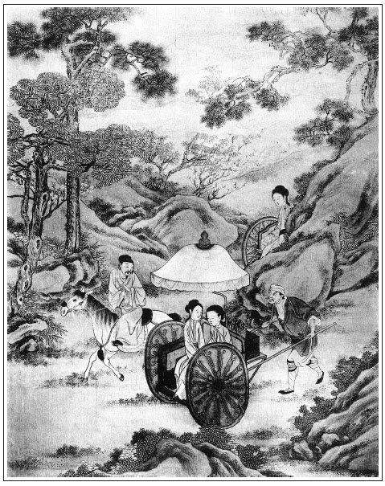

張回夫西門慶吃藥而死，完武大公案也。李嬌兒盜財歸院，完瓶兒、子虛公案也。此回道國拐財，完苗青公案也。來保欺主，完蕙蓮、來旺公案也。一部剝剝雜雜大書，看他勾消帳簿，卻清清白白，一絲不苟。
點染胡秀去，總欲結王六兒一案，以為道國拐財之由，而必自苗青處來，乃又結苗員外之死也。文章又非死板論殺者。王六兒與西門私，卻在胡秀口中，杭州地面結，大奇！
來保請敬濟上馬頭，請表子，又早為敬濟後文伏脈。
翟親家乃如此結煞，而喬親家又絕不音問，人情如畫。
來保妻弟劉倉，妙絕。與李銘一樣，蓋言留藏。夫有留藏之物，何所不有，況妻弟哉？
詩曰：
燕入非傍捨，鷗歸只故池。
斷橋無復板，臥柳自生枝。
遂有山陽作，多慚鮑叔知。
素交零落盡，白首淚雙垂。

話說韓道國與來保，自從拿著西門慶四千兩銀子，江南買貨物，到於揚州，抓尋苗青家內宿歇。苗青見了西門慶手札，想他活命之恩，盡力趨奉。又討了一個女子，名喚楚雲，張夾一場春夢，幻出巫雲，此西門雨雲不盡之孽也。養在家裡，要送與西門慶，以報其恩。韓道國與來保兩個且不置貨，成日尋花問柳，飲酒宿婦。繡旁從來夥計皆如此。只到初冬天氣，景物蕭瑟，不勝旅思。方才將銀往各處買布疋，裝在揚州苗青家安下，待貨物買完起身。先是韓道國請個表子，是揚州舊院王玉枝兒，來保便請了林彩虹妹子小紅。一日，請揚州鹽客王海峰和苗青游寶應湖，張夾是此等人游者。游了一日，歸到院中。又值玉枝兒鴇子生日，繡旁偏撞著。這韓道國又邀請眾人，擺酒與鴇子王一媽做生日。使後生胡秀，請客商汪東橋與錢晴川兩個，白不見到。不一時，汪東橋與錢晴川就同王海峰來了。張夾寫數人如畫，以襯下道國不堪。至日落時分，胡秀才來，被韓道國帶酒罵了兩句，說：「這廝不知在那裡吃酒，吃到這咱才來，口裡噴出來的酒氣。客人到先來了這半日，你不知那裡來，我到明日定和你算帳。」那胡秀把眼斜瞅著他，走到下邊，口裡喃喃吶吶，說：「你罵我，你家老婆在家裡仰搧著掙，你在這裡合蓬著丟！宅裡老爹包著你家老婆，㒲的不值了，才交你領本錢出來做買賣。你在這裡快活，你老婆不知怎麼受苦哩！得人不化白出你來，你落得為人就勾了。」繡眉當日西門慶圖小郎到南邊好看，誰知反弄的不好，看世事類然。張夾著此一段者，所以結住苗青。使道國拐財而去，不好再往揚州拐騙楚雲也。筆墨周旋之至，豈閒文哉。對玉枝兒鴇子只顧說。鴇子便拉出他院子裡，說：「胡官人，你醉了，你往房裡睡去罷。」那胡秀大吆大喝，白不肯進房。不料韓道國正陪眾客商在席上吃酒，聽見胡秀口內放屁辣臊，心中大怒，走出來踢了他兩腳，罵道：「賊野囚奴，我有了五分銀子，雇你一日，怕尋不出人來！」繡旁罵不過。即時趕他去。那胡秀那裡肯出門，在院子內聲叫起來，說道：「你如何趕我？我沒壞了管帳事！你倒養老婆，倒趕我，看我到家說不說！」繡眉行止不端，便不能服人。被來保勸住韓道國，一手扯他過一邊，說道：「你這狗骨頭，原來這等酒硬！」那胡秀道：「叔叔，你老人家休管他。我吃甚麼酒來，我和他做一做。」被來保推他往屋裡挺覺去了。正是：
酒不醉人人自醉，色不迷人人自迷。
來保打發胡秀房裡睡去不題。韓道國恐怕眾客商恥笑，張夾所以一去不復來。後雖敗露，終歸臨清，不往揚州也。則又為愛姐下線，豈閒文哉？和來保席上觥籌交錯，遞酒哄笑。林彩虹、小紅姊妹二人並王玉枝兒三個唱的，彈唱歌舞，花攢錦簇，行令猜枚，吃至三更方散。次日，韓道國要打胡秀，胡秀說：「小的通不曉一字。」繡旁收得妙。張夾既下一波，便且結住。道國被苗青做好做歹勸住了。
話休饒舌。有日貨物置完，打包裝載上船。不想苗青討了送西門慶的那女子楚雲，忽生起病來，動身不得。繡旁造化。張夾所為夢也隨手便結。苗青說：「等他病好了，我再差人送了來罷。」只打點了些人事禮物，抄寫書帳，打發二人並胡秀起身。王玉枝並林彩虹姊妹，少不的置酒馬頭，作別餞行。從正月初十日起身，一路無詞。一日到臨清閘上，這韓道國正在船頭站立，忽見街坊嚴四郎，張夾嚴者，言也。從上流坐船而來，往臨清接官去。看見韓道國，舉手說：「韓西橋，你家老爹從正月間沒了。」說畢，船行得快，就過去了。張夾不然來保必同聞矣。這韓道國聽了此言，遂安心在懷，瞞著來保不說。不想那時河南、山東大旱，赤地千里，田蠶荒蕪不收，棉花布價一時踴貴，每疋布帛加三利息，各處鄉販都打著銀兩遠接，在臨清一帶馬頭迎著客貨而買。韓道國便與來保商議：「船上布貨約四千餘兩，見今加三利息，不如且賣一半，又便宜鈔關納稅，就到家發賣也不過如此。遇行市不賣，誠為可惜。」來保道：「夥計所言雖是，誠恐賣了，一時到家，惹當家的見怪，如之奈何？」韓道國便說：「老爹見怪，都在我身上。」來保強不過他，就在馬頭上，發賣了一千兩布貨。韓道國說：「雙橋，你和胡秀在船上等著納稅，我打旱路同小郎王漢，打著這一千兩銀子，先去報老爹知道。」來保道：「你到家，好歹討老爹一封書來，下與鈔關錢老爹，少納稅錢，先放船行。」韓道國應諾。同小郎王漢裝成馱垛，往清河縣家中來。
有日進城，在甕城南門裡，日色漸落，忽撞遇看墳的張安，推著車輛酒米食鹽，張夾是新墳景象。正出南門。看見韓道國，便叫：「韓大叔，你來家了。」韓道國看見他帶著孝，問其故，張安說：「老爹死了，明日三月初九日斷七。大娘交我拿此酒米食盒往墳上去，明日與老爹燒紙。」這韓道國聽了，說：「可傷，可傷！果然路上行人口似碑，話不虛傳。」打頭口徑進城中。到了十字街上，心中算計：「且住。張夾善惡分界。有心要往西門慶家去，況今他已死了，天色又晚，不如且歸家停宿一宵，和渾家商議了，明日再去不遲。」繡眉處義利之間，再算計不得，一算計便利重於義矣。於是和王漢打著頭口，逕到獅子街家中。二人下了頭口，打發趕腳人回去，叫開門，王漢搬行李馱垛進入堂中，逕到獅子街家中。二人下了頭口，打發趕腳人回去，叫開門，王漢搬行李馱垛進入堂中。老婆一面迎接入門，拜了佛祖。王六兒替他脫衣坐下，丫頭點茶吃。韓道國先告訴往回一路之事，道：「我在路上撞遇嚴四哥與張安，才知老爹死了。好好的，怎的就死了？」王六兒道：「天有不測風雲，人有暫時禍福。誰人保得無常！」韓道國一面把馱垛打開，取出他江南置的許多衣裳細軟等物，並那一千兩銀子，一封一封都放在炕上。老婆打開看，都是白光光雪花銀兩，便問：「這是那裡的？」韓道國說：「我在路上聞了信，就先賣了這一千兩銀子來了。」又取出兩包梯己銀子一百兩，因問老婆：「我去後，家中他也看顧你不曾？」王六兒道：「他在時倒也罷了，張夾輸心之言。如今你這銀子還送與他家去？」韓道國道：「正是要和你商議，咱留下些，把一半與他如何？」老婆道：「呸，你這傻奴才料，這遭再休要傻了。張夾前番不傻待如何？如今他已是死了，這裡無人，咱和他有甚瓜葛？不急你送與他一半，交他招韶道兒，問你下落。到不如一狠二狠，把他這一千兩，咱雇了頭口，拐了上東京，投奔咱孩兒那裡。愁咱親家太師爺府中，安放不下你我！」繡眉僥西門慶之幸，而得竊太師之勢，轉欲倚太師之勢，而壓西門慶，小人心腸盡如此！韓道國道：「丟下這房子，急切打發不出去，怎了？」張夾一千兩現物，尚捨不得此一房，人情如此。老婆道：「你看沒才料！何不叫將第二個來，繡旁餘情不斷。張夾直透一百回。此處連搗鬼兄弟亦有用處，真令人哭殺兄弟矣。留幾兩銀子與他，就叫他看守便了。等西門慶家人來尋你，只說東京咱孩兒叫了兩口去了。莫不他七個頭八個膽，敢往太師府中尋咱們去？張夾西門官人固常以老爺處嚇人矣。就尋去，你我也不怕他。」韓道國道：「爭奈我受大官人好處，怎好變心的？沒天理了！」繡旁良心何嘗不在。張夾惡人何嘗不解此，然此句乃跌入月娘待人之失也。老婆道：「自古有天理到沒飯吃哩。他佔用著老娘，使他這幾兩銀子，不差甚麼。繡旁說來你自有理。張夾西門如生，當亦無辭。想著他孝堂裡，我到好意備了一張插桌三牲，往他家燒紙。他家大老婆那不賢良的淫婦，半日不出來，在屋裡罵的我好訕的。繡眉月娘從未罵人，只罵得王六兒幾句，便招怨失事，可見越是好人，越行惡事不得。我出又出不來，坐又坐不住，落後他第三個老婆出來陪我坐，我不去坐，就坐轎子來家了，想著他這個情兒，我也該使他這幾兩銀子。」張夾此處卻入月娘之失。見西門雖愚，使月娘能柔順以接物，或尚可挽回。即此一事，已知月娘無禮，無才，一味隨意驕人。西門死不數日，而千金之失由於一氣，月娘不肖為何如？此所以道國拐財必入月娘，而售色拐財，又為西門因果，月娘罪案也。一席話，說得韓道國不言語了。夫妻二人，晚夕計議已定。到次日五更，叫將他兄弟韓二來，如此這般，叫他看守房子，又把與他一二十兩銀子盤纏。那二搗鬼千肯萬肯，張夾有何不肯？說：「哥嫂只顧去，等我打發他。」這韓道國就把王漢小郎並兩個丫頭，也跟他帶上東京去。雇了二十輛車，把箱籠細軟之物都裝在車上。投天明出西門，逕上東京去了。張夾自苗青處來，想是算明前帳而去，可歎，可歎！正是：
撞碎玉籠飛綵鳳，頓開金鎖走蛟龍。
這裡韓道國夫婦東京去了不題。單表吳月娘次日帶孝哥兒，同孟玉樓、潘金蓮、西門大姐、奶子如意兒、女婿陳敬濟，往墳上與西門慶燒紙。張安就告訴月娘，昨日撞見韓大叔來家一節，月娘道：「他來了，怎的不到我家來？只怕他今日來。」在墳上剛燒了紙，坐了沒多回，老早就起身來家。使陳敬濟往他家，「叫韓夥計去，問他船到那裡了？」初時叫著不聞人言，次則韓二出來，說：「俺侄女兒東京叫了哥嫂去了，船不知在那裡。」張夾以東京嚇之，報應如此。讓陳敬濟回月娘。月娘不放心，使敬濟騎頭口往河下尋船。張夾思其夫之言遲矣，月娘如死，何以對西門？去了一日，到臨清馬頭船上，尋著來保船隻。來保問：「韓夥計先打了一千兩銀子家去了。」敬濟道：「誰見他來？張安看見他進城，次日墳上來家，大娘使我問他去，他兩口子奪家連銀子都拐的上東京去了。如今爹死了，斷七過了，大娘不放心，使我來找尋船隻。」這來保口中不言，心內暗道：「這天殺，原來連我也瞞了，嗔道路上定要賣這一千兩銀子，乾淨要起毛心。正是人面咫尺，心隔千里。」這來保見西門慶已死，也安心要和他一路。把敬濟小伙兒引誘在馬頭上各唱店中、歌樓上飲酒，張夾敬濟不經事，只如此帶出。請表子頑耍。暗暗船上搬了八百兩貨物，卸在店家房內，封記了。一日鈔關上納了稅，放船過來，在新河口起腳裝車，往清河縣城裡來，家中東廂房卸下。
自從西門慶死了，獅子街絲綿鋪已關了。對門段鋪，甘夥計、崔本賣了銀兩都交付明白，各辭歸家去了。張夾去了二個。房子也賣了，止有門首解當、生藥鋪，敬濟與傅夥計開著。
原來這來保妻惠祥，有個五歲兒子，名僧寶兒。韓道國老婆王六兒有個侄女兒四歲，二人割衿做了親家。家中月娘通不知道。這來保交卸了貨物，就一口把事情都推在韓道國身上，說他先賣了二千兩銀子來家。繡旁自然之理。張夾又輕送下一千，月娘一罵之失為何如？作者之罪月娘，真無處不形其惡。那月娘再三使他上東京，問韓道國銀子下落。被他一頓話說：「咱早休去！一個太師老爺府中，誰人敢到？沒的招是惹非。得他不來尋你，咱家念佛。到沒的招惹虱子頭上撓！」月娘道：「翟親家也虧咱家替他保親，莫不看些分上兒。」來保道：「他家女兒見在他家得時，他敢只護他娘老子，莫不護咱不成？繡旁亦是正論。張夾當日出妻獻子之心，至此冰冷，西門雖死，月娘實與其謀，此時自問當何如？此話只好在家對我說罷了，外人知道，傳出去到不好了。只當丟這幾兩銀子罷，更休題了。」月娘聽了無法，也只得罷了。又交他會買頭，發賣布貨。他會了主兒來，月娘交陳敬濟兌銀講價錢，主兒都不服，拿銀出去了。張夾敬濟不經事，又如此點出。來保硬說：「姐夫，你不知買賣甘苦。俺在江湖上走的多，曉得行情，寧可賣了悔，休要悔了賣。這貨來家得此價錢就勾了。你十分把弓兒拽滿，迸了主兒，顯的不會做生意。我不是托大說話，你年少不知事體。我莫不胳膊兒往外撇？不如賣吊了，是一場事。」那敬濟聽了，使性兒不管了。張夾不經事又如此。他也不等月娘來分付，匹手奪過算盤，邀回主兒來。把銀子兌了二千餘兩，一件件交付與敬濟經手，交進月娘收了，推貨出門。月娘與了他二三十兩銀子房中盤纏，他便故意兒昂昂大意不收，張夾一路敘起強橫，直令人為千古有國有家者，孤兒寡婦，放聲一哭。高天茫茫，何處消此恨事？說道：「你老人家還收了。死了爹，你老人家死水兒，自家盤纏，又與俺們做甚？你收了去，我決不要。」一日晚夕，外邊吃的醉醉兒，走進月娘房中，搭伏著護炕，說念月娘：「你老人家青春少小，沒了爹，你自家守著這點孩子兒，不害孤另麼？」月娘一聲兒沒言語。繡眉來保之無禮不必論，使金蓮當此不知又作何狀，月娘亦可謂貞婦人矣。張夾此處方知蕙蓮承寵，必用惠祥怒詈之妙。
一日，東京翟管家寄書來，知道西門慶死了，張夾與致賻遙映。聽見韓道國說，他家中有四個彈唱出色女子，該多少價錢，說了去，兌銀子來，要載到京中答應老太太。月娘見書，慌了手腳，叫將來保來計議，與他去好，不與他去好。來保進入房中，也不叫娘，只說：「你娘子人家不知事，張夾曹阿瞞不是過也。作者特為千古有國有家者痛哭。不與他去，就惹下禍了。這個都是過世老頭兒惹的，張夾吾不知作者有何忠憤，摹此恨事如畫。恰似賣富一般，但擺酒請人，就叫家樂出去，有個不傳出去的？何況韓夥計女兒又在府中答應老太太，有個不說的？我前日怎麼說來，今果然有此勾當鑽出來。繡眉古人賞功，以不失人臣禮為上，深有感於此輩臣僕之可恨也。你不與他，他裁派府縣，差人坐名兒來要，不怕你不雙手兒奉與他，還是遲了。難說四個都與他，不如今日胡亂打發兩個與他，還做面皮。」這月娘沉吟半晌。孟玉樓房中蘭香，與金蓮房中春梅，都不好打發。繡春又要看哥兒，不出門。因問他房中玉簫與迎春，情願要去。張夾所為「妻兒趙迎春，各自尋頭奔」者，非乎？以此就差來保，僱車輛裝載兩個女子，往東京太師府中來。不料來保這廝，在路上把這兩個女子都奸了。張夾來保之惡如此。總是十成寫其惡，以與來旺解嘲，又為孤兒寡婦刻骨動頭寫「冷」字也。有日到東京，會見韓道國夫婦，把前後事都說了。韓道國謝來保道：「若不是親戚看顧我，在家阻住，我雖然不怕他，也未免多一番唇舌。」翟謙看見迎春、玉簫兩個都生的好模樣兒，一個會箏，一個會弦子，都不上十七八歲，進入府中伏侍老太太，賞出兩錠元寶來。張夾何不分出一分賻儀來？可歎。這來保還克了一錠，到家只拿出一錠元寶來與月娘，還將言語恐嚇月娘說：「若不是我去，還不得他這錠元寶拿家來。你還不知，韓夥計兩口兒在那府中好不受用富貴，獨自住著一所宅子，呼奴使婢，坐五行三。翟管家以老爹呼之，他家女兒韓愛姐，日逐上去答應老太太，寸步不離，要一奉十，揀口兒吃用，換套穿衣。如今又會寫，又會算，福至心靈，出落得好長大身材，姿容美貌。前日出來見我，打扮得如瓊林玉樹一般，百伶百俐，一口一聲叫我保叔。如今咱家這兩個家樂到那裡，還在他手裡討針線哩。」張夾世情固有如此。說畢，月娘還甚是知感他不盡。繡眉月娘雖呆，終不失為好人。張夾一語使孤兒寡婦淚已盈把矣。打發他酒饌吃了，與他銀子又不受，拿了一疋段子與他妻惠祥做衣服穿，不在話下。
這來保一日同他妻弟劉倉，張夾留藏。往臨清馬頭上，將封寄店內布貨，盡行賣了八百兩銀子，暗買下一所房子，就在劉倉右邊門首，就開雜貨鋪兒。他便日逐隨倚祀會茶。他老婆惠祥，要便對月娘說，假推往娘家去。到房子裡，從新換了頭面衣服，珠子箍兒，插金戴銀，張夾「從新」二字大是苦事。往王六兒娘家王母豬家扳親家，行人情，坐轎看他家女兒去來。到房子裡，依舊換了慘淡衣裳，才往西門慶家中來，只瞞過月娘一人不知。來保這廝，常時吃醉了，來月娘房中，嘲話調戲，兩番三次。不是月娘為人正大，也被他說念的心邪，上了道兒。又有一般小廝媳婦，在月娘根前，說他媳婦子在外與王母豬作親家，插金戴銀，行三坐五。潘金蓮也對月娘說了幾次，月娘不信。
惠祥聽了此言，在廚房中罵大罵小。張夾方知怒詈文字之妙。來保便裝胖學蠢，自己誇獎，說眾人：「你每隻好在家裡說炕頭子上嘴罷了！相我水皮子上，顧瞻將家中這許多銀子貨物來家。張夾自是苗青一流。若不是我，都吃韓夥計老年箝嘴，拐了往東京去。繡眉只引最下者為比，以見己能，此人情世道所以日薄也。只『呀』的一聲，干丟在水裡也不響。張夾回思松下喫茶，苗青當亦可以無恨來保。如今還不道俺每一個『是』，說俺轉了主子的錢了，架俺一篇是非。正是割股的也不知，燃香的也不知。自古『信人調，丟了瓢』。」媳婦子惠祥張夾提明惠祥，愈知前怒詈一回之妙，千里伏線矣。便罵：「賊嚼舌根的淫婦！說俺兩口子轉的錢大了，在外行三坐五扳親。老道出門，問我姊那裡借的幾件子首飾衣裳，張夾比惠蓮說借物何如？就說是俺落的主子銀子治的！要擠撮俺兩口子出門，也不打緊。繡旁自開端，妙甚。等俺每出去，料莫天也不著餓水鴉兒吃草。張夾此日因自氣勢，人情如此。我洗淨著眼兒，看你這些淫婦奴才，在西門慶家裡住牢著！」月娘見他罵大罵小，尋由頭兒和人嚷，鬧上吊；漢子又兩番三次，無人處在根前無禮，心裡也氣得沒入腳處，只得交他兩口子搬離了家門。這來保就大剌剌和他舅子開起個布鋪來，發賣各色細布，張夾不知夥計為誰？夥計娘子又何如來往耶？日逐會親友，行人情，張夾不知可到房簷底下開門家去也。不在話下。正是：
勢敗奴欺主，時衰鬼弄人。
本章完!